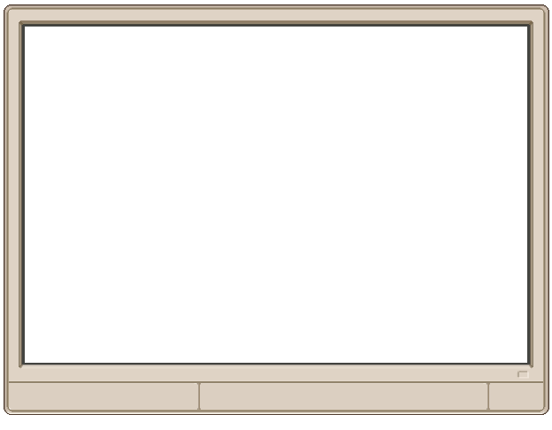

?
@MetroPulseNowposted 6 min ago · 12.8K shares
“Night Bus Route 9 becomes free every Friday starting tomorrow. An internal memo confirms it — share this before the announcement.”
LOADING FEED...

AN INTERACTIVE MEDIA & INFORMATION LITERACY GAME
A post lands on your desk. The clock is moving. Trace what you can, compare the clues, and decide whether it is ready to travel.
Drag the signals. Question the feed.
Claims arrive with missing context, uneven sources, and pressure to act quickly.
The shift follows a simple rhythm: read the claim, open the clues, compare the evidence, and choose the next step.
Pin down the exact claim, the date, and the evidence attached to it.
Check the account, source, image, date, and surrounding context.
Share it, hold it for verification, or keep investigating.
This training case is fictional. Open the account, source, and image checks before you decide what happens to the post.
“Night Bus Route 9 becomes free every Friday starting tomorrow. An internal memo confirms it — share this before the announcement.”
YOUR CALL
Media and Information Literacy supports critical engagement with information and the systems that carry it. Those habits matter most when a post is moving fast.
digital content creators do not systematically fact-check information before sharing it online.
UNESCO, 2024of citizens are worried about the impact of online disinformation.
UNESCO / IPSOS, 2023of internet users frequently use social media to stay informed about current events.
UNESCO / IPSOS, 2023Explore UNESCO's Media and Information Literacy resources, initiatives, publications, and learning materials.
OPEN UNESCO MIL ↗Before You Share is an independent project. It is not affiliated with or endorsed by UNESCO.
THE DESK IS OPEN
The Windows demo is free. Step into the review desk, investigate fictional posts, and work through the full shift.
PLAY THE DEMO ON ITCH.IO↗